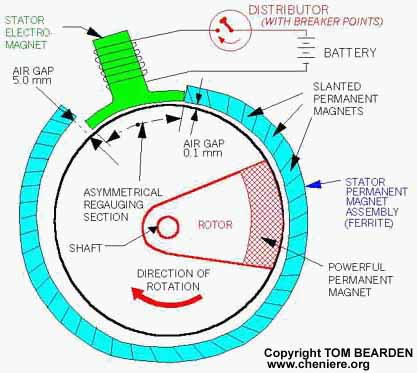
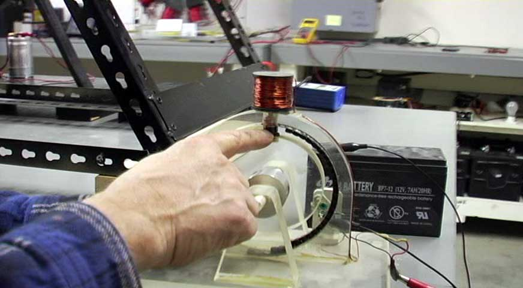
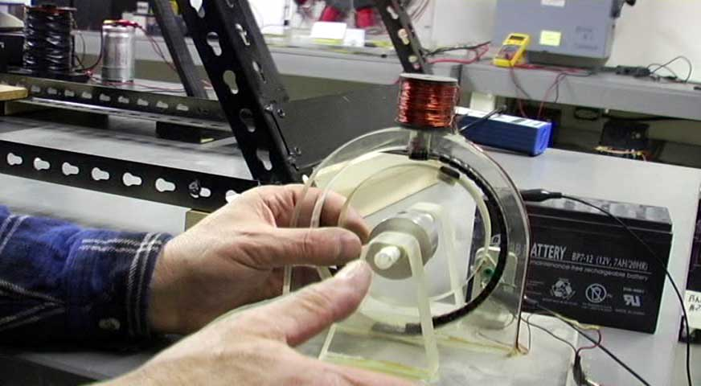

| The Magnetic Wankel Engine (Takahashi Motor) The Magnetic Wankel engine should also be capable of COP > 1.0 and closed-loop self-powering, but apparently it has also been suppressed, as have all Japanese COP > 1.0 EM systems. For details, see T.E. Bearden, "The Master Principle of EM
Overunity and the Japanese Overunity Engines," Infinite Energy,
1(5&6), Nov. 1995-Feb. 1996, p. 38-55;
"The Master Principle of
Overunity and the Japanese Overunity Engines: A New Pearl Harbor?". Excerpted from "On Extracting Electromagnetic Energy from the Vacuum," IC-2000, by Tom Bearden. The whole secret of the Wankel was in confining the back mmf (magneto-motive force) region to a tiny section, so that for a very minuscule expenditure of energy, the back mmf could be overcome easily and converted to forward mmf. Most of the energy to do that, is provided by the Lenz law reaction, which will only do it momentarily but that is quite sufficient. Tom Bearden The genesis of the Takahashi Motor 'Accident' in lab creates Super Motor - THE SUNDAY TIMES, 10th December, 1995 |
Working Replication of a Magnetic Wankel motor

